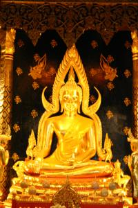
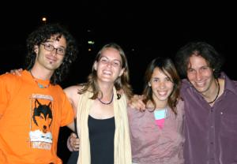
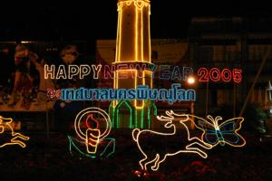

Le 31 décembre 2004,
Heureusement que nous partons ce matin parce que je n’aurais pas pu, un jour de plus, empêcher Michael d’aller tuer ce pauvre coq ! Nous nous pointons à la gare à heure dite en ayant un peu peur de ce qui nous attend en 3eme classe... Nous nous retrouvons, assis sur des sièges relativement confortables avec, certes, du monde partout, mais pas de bestioles comme nous le craignions. Le wagon est bondé avec la majeure partie des gens debout mais nous avons la chance d’avoir des places assises, nous n’allons pas nous plaindre ! Durant le trajet, nous faisons la connaissance d’un couple d’étrangers, les seuls du wagon et nous passons les 4 heures de train a discuter ensemble. Elle est Argentine et lui est Espagnol, mais il parle bien anglais contrairement à sa femme qui ne parle qu’espagnol. La discussion a lieu en anglais avec quelques temps morts, le temps qu’il lui traduise notre conversation, c’est assez marrant ! Nous apprenons quelques mots d’espagnol, ça pourra nous servir en Amérique du Sud, ils apprennent quelques mots de français et nous révisons ensemble notre thaïlandais aidés par une jeune Thaïlandaise assise devant nous. Le trajet passe vite et le feeling passe bien avec Sylvania et Ivo. Nous leur proposons de nous retrouver le soir pour passer le Nouvel An ensemble et ils acceptent enchantés !
Pour cette dernière nuit de l’année 2004, nous avons réservé un hôtel de luxe a 750 bahts (environ 15 euros) au lieu des 200 bahts (environ 4 euros) de d’habitude. La modernité de cette chambre nous change vraiment de tout ce que nous avons pu avoir depuis le début de notre voyage ! La chambre est luxueuse et contient un placard (chose rare ici !), une télévision, un frigo avec quelques collations a l’intérieur, deux petits fauteuils et deux lits séparés (ça évitera que nous nous donnions des coups de pieds cette nuit) avec... tenez-vous bien... des draps !!! C’est la première fois que nous voyons ça depuis le départ ! Des beaux draps blancs tout propres dans lesquels il fait bon de se glisser... Jusqu’ici, notre sac à viande (drap qui ressemble à un sac de couchage mais en beaucoup plus léger) était obligatoire à cause de la propreté douteuse du lit ou de l’absence de drap... Mais dormir dans un sac, ce n’est pas toujours très agréable, on se sent un peu coincée des fois.
Et je n’ai pas encore parlé de la salle de bain ! La salle de bain... C’est un vrai bonheur rien qu’à la regarder et encore plus à utiliser ! Déjà, il y a de l’eau chaude, chose rare dans ce pays... Mais ce n’est pas tout... Une belle baignoire trône au milieu de la pièce !!! Le summum du luxe pour nous qui n’en n’avons pas revu depuis la France... D’habitude, la salle de bain se compose de toilettes, parfois turques, d’un lavabo et d’un pommeau de douche. Il n’y a pas de bac pour la douche, l’eau coule directement sur le carrelage et s’évacue (pas toujours très bien) par un trou situé dans un coin de la pièce. Généralement, la salle de bain ressemble à une piscine où tout le monde patauge allègrement. Et lorsqu’elle est publique, les gens y vont souvent avec leurs chaussures... Je vous laisse imaginer l’état !! C’est pour cela que je me douche presque tout le temps avec mes tongs. Bref, pour nous, c’est un vrai bonheur de retrouver, pour quelques jours, notre confort auquel nous étions habitués, même si ça ne nous gêne absolument pas de reprendre notre budget routard par la suite. Ca fait aussi parti du folklore et je ne m’en plaints absolument pas !
 Après une bonne douche chaude, nous voilà partis à la rencontre du bouddha Chinnarat, la statue la plus vénérée de Thaïlande. En effet, en arrivant sur place, nous avons du mal à nous frayer un passage parmi la foule. Des touristes étrangers ainsi qu’énormément de locaux se pressent autour de ce beau bouddha. Dans une si petite ville, ça fait drôle de voir autant de monde agglutiné dans un coin, alors qu’il n’y a plus aucun touriste quelques mètres plus loin... Sur le chemin menant au Wat (temple), des stands de nourriture, de vêtements ainsi que des concerts commencent à se mettre en place pour ce soir. Ca promet !
Nous rentrons nous changer à l’hôtel et nous rejoignons nos 2 amis espagnols au point de rendez-vous. C’est l’effervescence dans la rue, il y a du monde partout, à tous les stands ! Un magnifique spectacle de danses thaïlandaises nous accueillent en musique. Ce soir, nous n’aurons pas trop le choix en alcool, ils ne vendent que de la bière ! Moi qui n’aime pas trop ça, ce n’est pas ce soir que je finirai saoule ! Par contre, Michael en tant que vrai Lillois, est aux anges avec sa bière ! Et nos deux compères ont l’air également plus que ravis. Nous passons la soirée à nous promener dans la rue, à discuter, à rire, à danser et à manger des plats de toutes sortes à chaque stand.  Nous essayons des plats culinaires méconnus, en trouvons certains délicieux, d’autres par contre, ne sont pas du tout à notre goût. Le tout est arrose de bières bien sur ! Nos compagnons commencent à être bien gais et a avoir la tête qui tourne... Peu de temps avant minuit, nous sommes invités à la table de 5 Thaïlandais un peu bourrés. Ils nous proposent des bières mais Michael et moi n’en pouvons plus. Par contre, Sylvania et Ivo ne se le font pas dire 2 fois ! Les Thaïlandais nous font goûter leur repas qui s’avère être archi-épicé... Sylvania s’en brûle les lèvres ! Commence alors le jeu de celui qui pourra en manger le plus sans pleurer... Michael s’y prête et a le hoquet pendant au moins 20 minutes... Les Thaïlandais font les fiers mais nous avons le droit a une galerie de grimaces lorsqu’ils avalent une énorme bouchée de leur affreuse mixture ! Ca y est, minuit sonne ! Tout le monde se jette dans les bras des uns et des autres... Ce fut une excellente soirée de réveillon !
 Bonne année 2005 a tous !!
Eve-Laure
{kind=link}
{kind=link}
{kind=link}